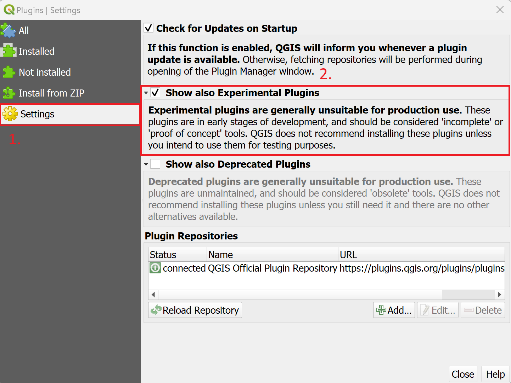

2.6. Mapas base#
Los mapas base en QGIS sirven como capas fundamentales que proporcionan un contexto geográfico esencial para otras capas de datos espaciales. Suelen incluir entidades como caminos, ríos, límites administrativos, información del terreno y, en algunos casos, imágenes satelitales. El objetivo principal de los mapas base es ofrecer una referencia visual para el análisis espacial, la visualización de los datos y la creación de mapas en los proyectos de QGIS.
Entre las ventajas de utilizar mapas base en QGIS, incluidas las imágenes satelitales, se incluyen:
Referencia contextual: los mapas base ofrecen un fondo sobre el que pueden superponerse otras capas de datos espaciales, proporcionando a los usuarios un valioso contexto para sus análisis y visualizaciones.
Visualización mejorada: la incorporación de imágenes satelitales como mapas base añade una capa adicional de detalle y realismo a los mapas creados en QGIS. Las imágenes satelitales proporcionan vistas de alta resolución de la superficie terrestre, lo que permite a los usuarios visualizar con precisión entidades geográficas como la cobertura terrestre, la vegetación y las zonas urbanas.
Configuración rápida del proyecto: la incorporación de mapas base preexistentes, incluidas las imágenes satelitales, a los proyectos en QGIS permite a los usuarios configurar nuevos proyectos rápidamente sin necesidad de digitalizar o crear capas base desde cero.
Las limitaciones de los mapas base, incluidas las imágenes satelitales, en QGIS pueden ser:
Detalle limitado: aunque las imágenes satelitales proporcionan vistas de alta resolución de la superficie de la Tierra, es posible que no capten determinadas entidades o detalles visibles en otros tipos de mapas base, como los topográficos o temáticos.
Precisión de los datos: dependiendo de la fuente de las imágenes satelitales, puede haber variaciones en la precisión, integridad o actualidad de los datos, lo que puede afectar a la fiabilidad de los análisis o visualizaciones.
Dependencia de la conectividad a internet: algunos mapas base de imágenes satelitales, sobre todo los procedentes de servicios cartográficos en línea, requieren una conexión activa a internet para acceder a ellos y puede que no estén disponibles sin conexión.
En general, los mapas base, incluidas las imágenes satelitales, desempeñan un papel crucial en los proyectos de QGIS al proporcionar una capa fundamental del contexto geográfico y la referencia visual. Los usuarios deben aprovechar las ventajas de las imágenes satelitales sin dejar de ser conscientes de sus limitaciones y teniendo en cuenta fuentes de datos complementarias para realizar análisis y visualizaciones exhaustivos.
La siguiente sección proporcionará una visión general sobre cómo acceder y añadir mapas base a su proyecto de QGIS.
2.6.1. Mapas base estándar de QGIS#
Siempre puede añadir el OpenStreetMap estándar como un mapa base a su lienzo del mapa.
Tip
El artículo de la wiki sobre mapas base, tiene un tutorial sobre cómo añadir más tipos de mapas base (p. ej., de Google Maps) a las opciones estándar de mapa base en QGIS.
Hay dos formas de añadir OpenStreetMap como mapa base:
En el panel
Browser, busqueXYZ Tiles. Abra el menú desplegable haciendo clic en la flecha que aparece junto a él y seleccione OpenStreetMap.En el menú
Layer->Add Layer->Add XYZ layer...-> seleccione OpenStreetMap.
2.6.2. QuickMapServices#
Hay muchos complementos disponibles para QGIS que proporcionan herramientas adicionales que no están disponibles en una instalación estándar. La página sobre complementos de la Wiki ofrece información de ejemplo más detallada. Un plugin útil es QuickMapServices. Este plugin le permite acceder a una amplia gama de mapas base que no están disponibles por defecto en QGIS, como las imágenes satelitales de Bing o Sentinel-2.
Instalación de complementos
Para instalar un plugin, en la barra superior, navegue a Plugins -> Manage and Install Plugins… -> All ->
Busque el plugin -> Install Plugin
Tip
Si no puede encontrar una extensión específica, compruebe que no haya utilizado espacios en el nombre del plugin donde no corresponde (p. ej., al buscar QuickMapServices, la búsqueda “Quick Map” no arrojará resultados, pero “quickmap” sí). Puede utilizar un asterisco (*) como
comodín en las búsquedas (así, “quick*map” dará resultados con o sin espacio entre “quick” y “map”).
Si sigue sin encontrar una extensión, es posible que tenga que habilitar las extensiones experimentales en las opciones (véase más abajo).

Fig. 2.39 Configuración del Gestor de complementos para mostrar complementos experimentales#
Para añadir un mapa base desde el plugin QuickMapServices:
En el menú principal de la barra superior de la pantalla, navegue a
Web>QuickMapServices.Haga clic en
Search QMS. Se abrirá un nuevo panel, probablemente en la parte inferior derecha.Aquí puede buscar el mapa base que desee. Por ejemplo, Bing Aerial, diferentes versiones de OpenStreetMap, imágenes satelitales de Sentinel-2.
Tip
Encontrará una lista de mapas base y consultas de búsqueda útiles para el plugin QMS en este sitio web. Este enlace también se encuentra en la sección “Acerca de” del plugin QMS.
Video: Funcionalidad del plugin QuickMapServices__
Note
Cuando utilice QuickMapServices, tenga en cuenta que algunos de estos mapas están sujetos a leyes de derechos de autor que restringen su reproducción. Para conocer estas restricciones, consulte las licencias de derechos de autor de los mapas base que utilice. En general, las imágenes satelitales no son de uso gratuito. ¡Esto significa que no se pueden publicar mapas con todos los mapas base disponibles!
2.6.3. Preguntas de autoevaluación#
Compruebe sus habilidades
Compruebe si conoce los conceptos clave de este capítulo respondiendo a las preguntas siguientes.
¿Qué es un mapa base y por qué es útil en los proyectos de SIG?
Respuesta
Un mapa base es una capa de mapa fundamental o de fondo que proporciona un contexto geográfico (por ejemplo, carreteras, ríos, terreno, imágenes satelitales, límites administrativos) sobre el que se superponen los datos temáticos o analíticos. Es útil porque ayuda a los usuarios a orientarse geográficamente, proporciona referencias visuales y contexto espacial (por ejemplo, ver cómo se sitúan sus datos en relación con caminos, ciudades, cuerpos de agua) y agiliza la configuración y entrega de proyectos y mapas.
¿Cómo se añade un mapa base a QGIS? Describa al menos un método (plugin, XYZ tiles, etc.).
Respuesta
En el panel
Browser, expandir el grupo de las teselas “XYZ Tiles” y seleccionar un servicio como OpenStreetMap.Alternativamente, instalar el plugin QuickMapServices y utilizarlo para añadir un mapa.
¿Qué son los requisitos de atribución y cómo hay que gestionarlos cuando se utilizan mapas base de terceros?
Respuesta
Los requisitos de atribución son obligaciones establecidas por el proveedor de datos o el servicio de mapas respecto a cómo se debe acreditar (reconocer) su trabajo al utilizar sus mapas base. Puede incluir un aviso de derechos de autor, el nombre de la fuente de datos o un logotipo en el mapa o en el proyecto.
Muchos servicios de mapas base o imágenes satelitales están sujetos a derechos de autor o licencias restrictivas, lo que significa que no se pueden reproducir o publicar mapas libremente utilizándolos sin seguir las normas de la licencia.
Para gestionar correctamente la atribución:
Consultar los términos del servicio o la licencia del proveedor del mapa base antes de utilizar sus teselas.
Incluir la atribución requerida en algún lugar visible del mapa. Por ejemplo, al utilizar mapas base de OpenStreeMap, asegurarse de incluir la atribución “© OpenStreetMap contributors” en algún lugar del mapa. Una vez hecho esto, se puede distribuir y publicar el mapa libremente.